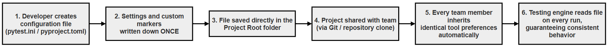
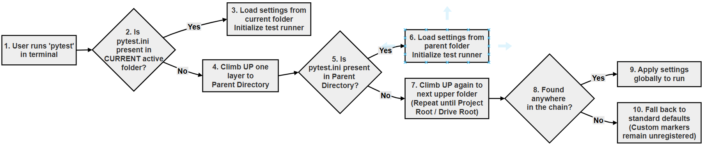
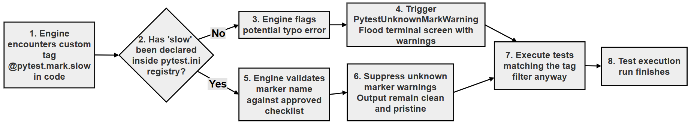

A Beginner's Guide to pytest.ini and pyproject.toml¶
Have you ever used a custom marker like @pytest.mark.slow and seen a warning in your terminal saying PytestUnknownMarkWarning? This warning appears because pytest does not know what "slow" means yet. It has not been introduced to it.
The fix is a simple text file named pytest.ini (or pyproject.toml). This file acts as a "settings menu" for your project. It tells pytest which markers you have created, which flags to use by default, and how to behave the same way on every computer.
This guide explains how to silence that warning, register your markers and keep your team's test runs identical. It includes step-by-step setup, a comparison of the two file formats, a complete worked example with its actual output, and a "No-Warning" cheat sheet.
Configuration files are not special to pytest. Almost every Python tool uses them, from code formatters to package installers, so the ideas on this page will be useful throughout your work with Python. In this chapter, they tie together several things you have already met: markers, command-line flags such as -v, and the pythonpath setting used when tests live in their own folder.
Table of Contents¶
- A Beginner's Guide to pytest.ini and pyproject.toml
- Key Terms Used on This Page
- 1. What is a Configuration File? (The Everyday Analogy)
- 2. Why Does Pytest Need One?
- 3. The Two Main Files: pytest.ini vs pyproject.toml
- 4. Where Does the File Live?
- 5. How to Fix the Warning (Step-by-Step)
- 6. Useful Tricks: Default Flags (addopts)
- 7. Visualizing the Lifecycle (Flowchart)
- 8. A Complete Worked Example
- 9. The "No-Warning" Cheat Sheet
- Scripts for This Page and How to Run Them
- Follow-Up Questions
- Summary
- Further Reading
Key Terms Used on This Page¶
| Term | Simple Meaning | Learn More |
|---|---|---|
| Configuration file | A plain text file that stores settings for a tool, so you do not have to type them every time | Configuration file on Wikipedia |
| Marker | A label attached to a test with @pytest.mark.<name>, used to group or select tests |
pytest: How to mark test functions |
| Registering a marker | Listing a custom marker in the configuration file so pytest knows it is intended | pytest: Registering marks |
| Flag (option) | A short setting added to a command, such as -v in pytest -v |
pytest: command-line flags |
| Project root | The top folder of your project. Pytest calls it the rootdir | pytest: rootdir |
| INI format | A simple format of section headers in square brackets and key = value lines |
INI file on Wikipedia |
| TOML format | A slightly stricter format, similar to INI, in which text is written in quotes and lists in square brackets | TOML website |
| Warning | A message that something may be wrong. Unlike an error, it does not stop the program | Python docs: warnings |
1. What is a Configuration File? (The Everyday Analogy)¶
Imagine you start a new job. On your first day, you adjust your chair height, set up your two monitors and log in to your computer. You do this once. The next day, you just sit down and work, because the computer "remembers" your preferences.
A configuration file works the same way for software tools like pytest. It is a plain text file where you write down your preferences (settings) once. Every time you run the tool, it reads this file and behaves exactly as you want, automatically.
Why not just type the settings every time? If you want pytest to be "verbose" (show detailed output), you could type pytest -v every time. But if you have 10 flags you always use, typing them becomes tedious. Worse, if a new developer joins your team, they will not know which flags to use, and their test results will look different from yours.
A configuration file solves this by storing these rules in the project folder. Everyone who downloads the project gets the same settings automatically.
What Does a Configuration File Look Like?¶
Configuration files are deliberately simple. They are plain text, so you can open them in Notepad if you want to. They do not contain Python code, and they do not contain HTML. They use a small, readable format: a setting name, an equals sign, and the value you want.
Here is a real configuration file for pytest:
[pytest]
addopts = -v
testpaths = tests
markers =
slow: marks tests that are slow
fast: marks tests that are fast
Reading it line by line:
| Line | Meaning |
|---|---|
[pytest] |
A section header. It says "the settings below are for pytest" |
addopts = -v |
Always add the -v flag, as if you had typed it |
testpaths = tests |
Look for tests in the tests folder |
markers = |
The start of a list of custom markers |
slow: marks tests that are slow |
One marker: its name, a colon and a short description. The lines of a list must be indented |
A configuration file is not a Python script. It is not run line by line, and it has no functions or variables. The tool simply reads it and picks up the settings it recognises. Pytest is helpful here: if you misspell a setting name (for example markerz instead of markers), it shows the warning PytestConfigWarning: Unknown config option: markerz, so mistakes do not go unnoticed.
The Three Things a Configuration File Does¶
Almost every configuration file in software does the same three jobs.
Thing 1: Stores your preferences so you do not have to repeat them¶
Instead of typing pytest -v --tb=short every time, you write those preferences in the configuration file once. Every future run picks them up automatically. (--tb=short makes the error details, called the traceback, shorter when a test fails.)
Thing 2: Tells the tool about things it does not know yet¶
Some tools need to be told about things you have created. Pytest, for example, only knows about its own built-in markers. If you invent a new marker called @pytest.mark.slow, pytest has never heard of it. The configuration file is where you formally introduce your new marker to pytest.
Thing 3: Makes behaviour consistent across a whole team¶
Because the configuration file lives inside the project folder, alongside your code, everyone who works on the project automatically uses the same settings. A new team member downloads (clones) the project and gets identical behaviour from day one.
One-Line Definition¶
A configuration file is a plain text file that stores settings for a software tool, so that the tool behaves the way you want it to, automatically, every time you use it.
Configuration Files in the Python World¶
Python tools use configuration files very widely. Here are the most common ones you will meet, grouped by the tool they belong to:
| File Name | Tool It Belongs To | What It Configures |
|---|---|---|
pytest.ini |
pytest | Registers custom markers, sets default flags, says which folder holds the tests |
pyproject.toml |
Many tools | The modern standard. It can hold settings for pytest, Black, Ruff, mypy and packaging, all in one file |
.flake8 |
flake8 | Configures the code style checker: which rules to ignore, maximum line length and so on |
mypy.ini |
mypy | Configures the type checker: how strict to be, which packages to check |
setup.cfg |
setuptools (and some other tools) | An older packaging and tool configuration format, still common in existing projects |
.env |
Your application | Stores environment variables, such as API keys, database passwords and feature switches. Because it holds secrets, it should never be committed to Git |
requirements.txt |
pip | Lists the Python packages the project depends on. Strictly, it is a list for the package installer rather than a settings file |
You May Have Already Used a Configuration File¶
If you have ever used pip install -r requirements.txt, you have already used a file of this kind. The requirements.txt file is simply a list (package names and versions) that tells pip what to install. There is no magic: you write a list in a file, and a tool reads it. Configuration files work on the same principle.
Flowchart Explaining How a Configuration File Is Used¶

The same idea, step by step:
flowchart TD
A["1. You type: pytest"] --> B["2. pytest looks for a configuration file"]
B --> C{"3. Configuration file found?"}
C -- Yes --> D["4. Read the settings: markers, addopts, testpaths"]
C -- No --> E["5. Use pytest's built-in defaults"]
D --> F["6. Combine the settings with any flags you typed"]
E --> F
F --> G["7. Find and run the tests"]
G --> H["8. Show the results"]
2. Why Does Pytest Need One?¶
The most common reason beginners create a configuration file is to fix a specific warning.
The "Unknown Marker" Warning¶
When you learned about markers, you might have written code like this. Save it as test_backup.py in an empty folder:
# test_backup.py
# A test that uses a custom marker which has not been registered yet.
# Step 1 - Import pytest so that we can use pytest.mark
import pytest
# Step 2 - Label the test with our own marker, 'slow'
@pytest.mark.slow # A custom marker we invented
def test_database_backup():
pass
Run it:
pytest
Output:
============================= test session starts ==============================
platform win32 -- Python 3.10.10, pytest-9.0.3, pluggy-1.6.0
rootdir: C:\warning-demo
plugins: anyio-4.12.1
collected 1 item
test_backup.py . [100%]
=============================== warnings summary ===============================
test_backup.py:9
C:\warning-demo\test_backup.py:9: PytestUnknownMarkWarning: Unknown pytest.mark.slow - is this a typo? You can register custom marks to avoid this warning - for details, see https://docs.pytest.org/en/stable/how-to/mark.html
@pytest.mark.slow # A custom marker we invented
-- Docs: https://docs.pytest.org/en/stable/how-to/capture-warnings.html
========================= 1 passed, 1 warning in 0.00s =========================
The full warning message is:
PytestUnknownMarkWarning: Unknown pytest.mark.slow - is this a typo? You can register custom marks to avoid this warning
Why? Pytest knows about its own built-in markers (such as skip, skipif, xfail and parametrize), but it does not know about your new marker slow. It thinks you might have made a typo. For example, if you wrote @pytest.mark.slwo by mistake, the warning would help you notice.
Note that the test still ran and passed. A warning does not stop anything. But a project full of warnings is untidy, and real problems can get lost among them.
The fix: You need to "introduce" your marker to pytest in a configuration file. Once it is registered, the warning disappears, and you can run commands like pytest -m slow to select your tests reliably.
Turning the Warning into an Error with --strict-markers¶
If you want pytest to be strict, you can make an unknown marker an error instead of a warning:
pytest --strict-markers
With the same unregistered slow marker, the output ends with:
_______________________ ERROR collecting test_backup.py ________________________
'slow' not found in `markers` configuration option
=========================== short test summary info ============================
ERROR test_backup.py - Failed: 'slow' not found in `markers` configuration op...
!!!!!!!!!!!!!!!!!!!! Interrupted: 1 error during collection !!!!!!!!!!!!!!!!!!!!
=============================== 1 error in 0.08s ===============================
Many teams add --strict-markers to addopts in their configuration file. Then a misspelt marker stops the test run at once, instead of being ignored.
3. The Two Main Files: pytest.ini vs pyproject.toml¶
Pytest can read its settings from several files, but you only need to pick one. The two most common choices are compared below.
| Feature | pytest.ini | pyproject.toml |
|---|---|---|
| Format | INI: key = value; text needs no quotes |
TOML: key = value; text must be in quotes and lists in square brackets |
| Section header | [pytest] |
[tool.pytest.ini_options] (pytest 9 and later also accept [tool.pytest]) |
| Best for | Projects where you only need to configure pytest | Modern Python projects that configure several tools |
| Difficulty | Simplest | Slightly more structured |
| Readability | Very easy for beginners | Slightly more wordy |
| Age | Older, traditional approach | The modern Python standard |
| Holds settings for other tools | No (pytest only) | Yes (Black, Ruff, mypy, pytest, packaging and more) |
| One file for the whole project | No: other tools need their own files | Yes: one file can configure everything |
| Suitable for small projects | Excellent | Excellent |
| Suitable for large projects | Good | Excellent |
| Most common in new projects | Less common | More common |
| Learning recommendation | Start here | Learn after understanding pytest.ini |
If a folder contains both files, pytest.ini wins. Pytest uses it, and its output header says configfile: pytest.ini (WARNING: ignoring pytest config in pyproject.toml!), so keep your pytest settings in only one of the two files.
The Same Settings in Both Formats¶
pytest.ini:
[pytest]
addopts = -v
markers =
slow: marks tests as slow (run with: pytest -m slow)
fast: marks tests as fast unit tests
pyproject.toml:
[tool.pytest.ini_options]
addopts = "-v"
markers = [
"slow: marks tests as slow (run with: pytest -m slow)",
"fast: marks tests as fast unit tests",
]
Notice the three differences in the TOML version:
- The section header is
[tool.pytest.ini_options]. - Text values are in double quotes:
"-v". - The markers are a list in square brackets, with a comma after each item.
Both files were tested with pytest 9.0.3, and both register the markers correctly.
4. Where Does the File Live?¶
Your configuration file should live in the project root. The project root is the main folder of your project, the folder where you usually type pytest in your terminal.
Structure example:
my_project/ <-- Project root (put the file here)
│
├── pytest.ini <-- The configuration file
├── src/
│ └── bank_account.py
└── tests/
└── test_bank.py
In this layout, the code is in src/ and the tests are in tests/. For test_bank.py to be able to write from bank_account import BankAccount, add pythonpath = src to pytest.ini. (If bank_account.py sits directly in the project root, as in the worked example below, use pythonpath = . instead.)
How pytest finds the file: When you run pytest, it starts from the folder you are in (or the folder you name on the command line). It looks there for pytest.ini, pyproject.toml, tox.ini or setup.cfg. If it finds none that contain pytest settings, it looks in the parent folder, then the grandparent folder, and so on, until it finds one. The folder where it finds the file becomes the project root (rootdir). The pytest documentation explains the full rules in determining rootdir and configfile.
This is why you can run pytest from inside the tests folder and still get your settings: pytest walks up and finds pytest.ini in the folder above.
Flowchart Showing How Pytest Finds the Configuration File¶

The same search, step by step:
flowchart TD
A["1. Start in the current folder"] --> B{"2. Is there a config file with pytest settings here?"}
B -- Yes --> C["3. Use it. This folder becomes the rootdir"]
B -- No --> D{"4. Is there a parent folder?"}
D -- Yes --> E["5. Move up to the parent folder"]
E --> B
D -- No --> F["6. No config file: use pytest's built-in defaults"]
5. How to Fix the Warning (Step-by-Step)¶
Let us create a pytest.ini file to register the slow and fast markers (and a third one, db) for the test_backup.py example.
Step 1: Create the File¶
Create a file named pytest.ini in your project root, next to test_backup.py. The first line must be [pytest].
Take care that the name is exactly pytest.ini. In Windows, turn on View > Show > File name extensions in File Explorer to make sure it has not been saved as pytest.ini.txt.
Step 2: Add the markers Setting¶
Under [pytest], add a line markers =. Then list your markers one per line, each indented by a few spaces. The format is name: description.
[pytest]
markers =
slow: marks tests as slow (run with: pytest -m slow)
fast: marks tests as fast unit tests
db: marks tests that need a database
The description is optional, but it is shown by pytest --markers, so it helps your team know what each marker means.
Step 3: Run pytest¶
Now run your tests again:
pytest
Output:
============================= test session starts ==============================
platform win32 -- Python 3.10.10, pytest-9.0.3, pluggy-1.6.0
rootdir: C:\warning-demo
configfile: pytest.ini
plugins: anyio-4.12.1
collected 1 item
test_backup.py . [100%]
============================== 1 passed in 0.00s ===============================
The warning is gone. Notice the new line configfile: pytest.ini, which confirms that pytest found and used the file.
Step 4: Use the Markers¶
Now you can select tests by marker with the -m flag.
Run only the slow tests:
pytest -m slow
Run only the fast tests:
pytest -m fast
Run everything except the slow tests:
pytest -m "not slow"
Put the expression in double quotes whenever it contains a space, as in "not slow". The worked example in section 8 shows the output of these commands.
6. Useful Tricks: Default Flags (addopts)¶
Besides markers, the most useful setting is addopts, short for "add options".
If you are tired of typing pytest -v --tb=short every single time, you can make it the default in your configuration file.
Example pytest.ini:
[pytest]
# Register markers
markers =
slow: marks tests as slow
# Set default flags
addopts = -v --tb=short
Result: now, if you just type pytest, pytest behaves exactly as if you had typed pytest -v --tb=short.
Lines starting with # are comments. Pytest ignores them, so you can use them to explain your settings to your team.
Other settings that are often used:
| Setting | Example | What It Does |
|---|---|---|
addopts |
addopts = -v --strict-markers |
Flags added to every run |
markers |
markers = slow: slow tests |
Registers custom markers |
testpaths |
testpaths = tests |
Folders to search for tests when you run plain pytest |
pythonpath |
pythonpath = . |
Folders added to Python's import path, so tests can import your code |
More settings, and the rules for where pytest looks for them, are described in the pytest guide on configuration.
7. Visualizing the Lifecycle (Flowchart)¶

The whole lifecycle of a test run with a configuration file, step by step:
flowchart TD
A["1. You type: pytest -m fast"] --> B["2. pytest finds pytest.ini in the project root"]
B --> C["3. Read addopts: add -v to the command"]
C --> D["4. Read markers: register fast and slow"]
D --> E["5. Read testpaths: search only the tests folder"]
E --> F["6. Collect all the tests"]
F --> G["7. Keep only the tests marked fast; deselect the rest"]
G --> H["8. Run the selected tests"]
H --> I["9. Show a detailed report because of -v"]
8. A Complete Worked Example¶
Here is a full example using the BankAccount class. The folder looks like this:
config-demo/ <-- Project root
│
├── pytest.ini
├── bank_account.py
└── tests/
└── test_bank.py
File 1: bank_account.py (The Application Code)¶
# bank_account.py
# The application code: a simple bank account.
class BankAccount:
# Step 1 - Create the account with an owner and an opening balance
def __init__(self, owner, balance=0):
self.owner = owner
self.balance = balance
# Step 2 - Add money
def deposit(self, amount):
self.balance += amount
# Step 3 - Take money out, refusing if there is not enough
def withdraw(self, amount):
if amount > self.balance:
raise ValueError("Insufficient funds")
self.balance -= amount
# Step 4 - Report the balance (the tests use this method)
def get_balance(self):
return self.balance
File 2: tests/test_bank.py (The Tests)¶
# tests/test_bank.py
# Tests for bank_account.py, labelled with the custom markers
# 'fast' and 'slow' that are registered in pytest.ini.
# Step 1 - Imports
import time
import pytest
from bank_account import BankAccount
# Step 2 - A quick test, labelled 'fast'
@pytest.mark.fast
def test_deposit_small_amount():
# A fast, in-memory test
account = BankAccount("Alice", 100)
account.deposit(50)
assert account.get_balance() == 150
# Step 3 - A test that takes longer, labelled 'slow'
@pytest.mark.slow
def test_deposit_large_amount():
# time.sleep(0.5) pauses for half a second to imitate a slow test
account = BankAccount("Bob", 0)
time.sleep(0.5)
account.deposit(1000000)
assert account.get_balance() == 1000000
File 3: pytest.ini (The Configuration)¶
# pytest.ini
# Settings for pytest. This file must be in the project root folder.
[pytest]
# Show each test name and result (as if -v were typed every time)
addopts = -v
# Look for tests only in the 'tests' folder
testpaths = tests
# Add the project root to Python's search path, so the tests
# can import bank_account.py from the folder above them
pythonpath = .
# Register the custom markers used in the tests
markers =
fast: Quick unit tests
slow: Slow integration tests
Each setting has a job:
addopts = -vshows each test name without typing-v.testpaths = teststells pytest where the tests are.pythonpath = .letstests/test_bank.pyimportbank_account.pyfrom the folder above. Without it, pytest stops withModuleNotFoundError: No module named 'bank_account'.markersregistersfastandslow, so there are no warnings.
Scenario 1: Run All Tests¶
Open the terminal in the config-demo folder and type:
pytest
Output:
============================= test session starts ==============================
platform win32 -- Python 3.10.10, pytest-9.0.3, pluggy-1.6.0 -- C:\Users\Anurag Gupta\AppData\Local\Programs\Python\Python310\python.exe
cachedir: .pytest_cache
rootdir: C:\config-demo
configfile: pytest.ini
testpaths: tests
plugins: anyio-4.12.1
collected 2 items
tests/test_bank.py::test_deposit_small_amount PASSED [ 50%]
tests/test_bank.py::test_deposit_large_amount PASSED [100%]
============================== 2 passed in 0.51s ===============================
Both tests ran, and -v was applied automatically. The header lines configfile: pytest.ini and testpaths: tests show that pytest used the settings. The run took about half a second because of the slow test.
Scenario 2: Run Only the Fast Tests (Filtering)¶
pytest -m fast
Output:
============================= test session starts ==============================
platform win32 -- Python 3.10.10, pytest-9.0.3, pluggy-1.6.0 -- C:\Users\Anurag Gupta\AppData\Local\Programs\Python\Python310\python.exe
cachedir: .pytest_cache
rootdir: C:\config-demo
configfile: pytest.ini
testpaths: tests
plugins: anyio-4.12.1
collected 2 items / 1 deselected / 1 selected
tests/test_bank.py::test_deposit_small_amount PASSED [100%]
======================= 1 passed, 1 deselected in 0.00s ========================
The slow test was deselected (left out) because of the filter. It did not run at all, so the run finished almost instantly.
Scenario 3: Run Everything Except the Slow Tests¶
pytest -m "not slow"
Output:
============================= test session starts ==============================
platform win32 -- Python 3.10.10, pytest-9.0.3, pluggy-1.6.0 -- C:\Users\Anurag Gupta\AppData\Local\Programs\Python\Python310\python.exe
cachedir: .pytest_cache
rootdir: C:\config-demo
configfile: pytest.ini
testpaths: tests
plugins: anyio-4.12.1
collected 2 items / 1 deselected / 1 selected
tests/test_bank.py::test_deposit_small_amount PASSED [100%]
======================= 1 passed, 1 deselected in 0.00s ========================
Here the result is the same as Scenario 2, because the project has only two tests. In a real project, "not slow" would also run tests that have no marker at all, while -m fast would run only the tests marked fast.
Scenario 4: List the Registered Markers¶
pytest --markers
The first lines of the output show your own markers, with the descriptions from pytest.ini:
@pytest.mark.fast: Quick unit tests
@pytest.mark.slow: Slow integration tests
The rest of the list shows the markers that are built into pytest.
9. The "No-Warning" Cheat Sheet¶
| What You Want to Do | Command or Code | Notes |
|---|---|---|
| Create the file | pytest.ini in the project root |
Must start with the [pytest] header |
| Register a marker | slow: description |
Goes under markers =, indented |
| Run fast tests | pytest -m fast |
Selects tests by marker name |
| Exclude slow tests | pytest -m "not slow" |
Use quotes when the expression has a space |
| Make unknown markers an error | addopts = --strict-markers |
Catches misspelt markers |
| List all markers | pytest --markers |
Shows your registered markers first |
| Set default flags | addopts = -v |
Saves typing long commands |
| Let tests import your code | pythonpath = . |
Needed when tests are in their own folder |
| Check which file pytest used | pytest --co |
The header shows configfile: pytest.ini if the file was found |
--co is short for --collect-only. It lists the tests that pytest finds, without running them.
Scripts for This Page and How to Run Them¶
All the files on this page are available in the config-demo folder and the warning-demo folder.
| File | What It Contains |
|---|---|
| warning-demo/test_backup.py | A test with an unregistered marker, to see the warning (sections 2 and 5) |
| config-demo/pytest.ini | The configuration file for the worked example |
| config-demo/bank_account.py | The BankAccount class |
| config-demo/tests/test_bank.py | Two tests with the fast and slow markers |
To run them on your computer:
- For the warning: create a folder
warning-demo, savetest_backup.pyin it, open the folder in VS Code (File > Open Folder...) and runpython -m pytestin the terminal (Terminal > New Terminal). Then add apytest.inias in section 5 and run it again. - For the worked example: create a folder
config-demo, savepytest.iniandbank_account.pyin it, create atestsfolder inside it and savetest_bank.pythere. Openconfig-demoin VS Code and run the commands from section 8, for examplepython -m pytest -m fast. - If you see
No module named pytest, install it withpython -m pip install pytest.
Detailed, step-by-step instructions (installing Python and VS Code, downloading files from GitHub and fixing common errors) are given in Running the Scripts on Your Computer.
Follow-Up Questions¶
Question 1: Warning or Error?¶
A test uses @pytest.mark.slow, but slow is not registered. What happens with pytest, and what happens with pytest --strict-markers?
Answer:
- With plain
pytest, the test runs, but pytest showsPytestUnknownMarkWarning: Unknown pytest.mark.slow. - With
--strict-markers, pytest treats the unknown marker as an error. It stops while collecting the tests and reports'slow' not found in markers configuration option. No tests run. - Registering
slowundermarkers =inpytest.inifixes both cases.
Question 2: Converting to pyproject.toml¶
Rewrite this pytest.ini as a pyproject.toml:
[pytest]
addopts = -v --tb=short
markers =
db: tests that need a database
Answer:
- Change the section header to
[tool.pytest.ini_options]. - Put the text value of
addoptsin quotes. - Turn the markers into a list of quoted strings in square brackets.
[tool.pytest.ini_options]
addopts = "-v --tb=short"
markers = [
"db: tests that need a database",
]
Question 3: Running pytest from the tests Folder¶
In the worked example, you open the terminal inside config-demo/tests and type pytest. Are the settings in config-demo/pytest.ini still used?
Answer:
- Pytest starts looking for a configuration file in the current folder,
tests. There is none. - It moves up to the parent folder,
config-demo, and findspytest.ini. - So yes, the settings are used, and
config-demobecomes the project root.
Question 4: A Misspelt Setting¶
You write markerz = instead of markers = in pytest.ini. What happens?
Answer:
- Pytest does not recognise
markerz, so it showsPytestConfigWarning: Unknown config option: markerz. - Your markers are not registered, because they were listed under the wrong name.
- So you also get
PytestUnknownMarkWarningfor each custom marker used in the tests. - The warnings point straight to the mistake. Fix the spelling, and both warnings disappear.
Summary¶
- A configuration file stores a tool's settings once, so every run, and every team member, gets the same behaviour.
- Pytest reads its settings from
pytest.ini(section[pytest]) orpyproject.toml(section[tool.pytest.ini_options]). - Register custom markers under
markers =to removePytestUnknownMarkWarning. Add--strict-markersto make misspelt markers an error. - Use
addoptsfor flags you always want,testpathsto say where the tests are, andpythonpathso that tests can import your code. - Put the file in the project root. Pytest searches the current folder and then each parent folder until it finds one.